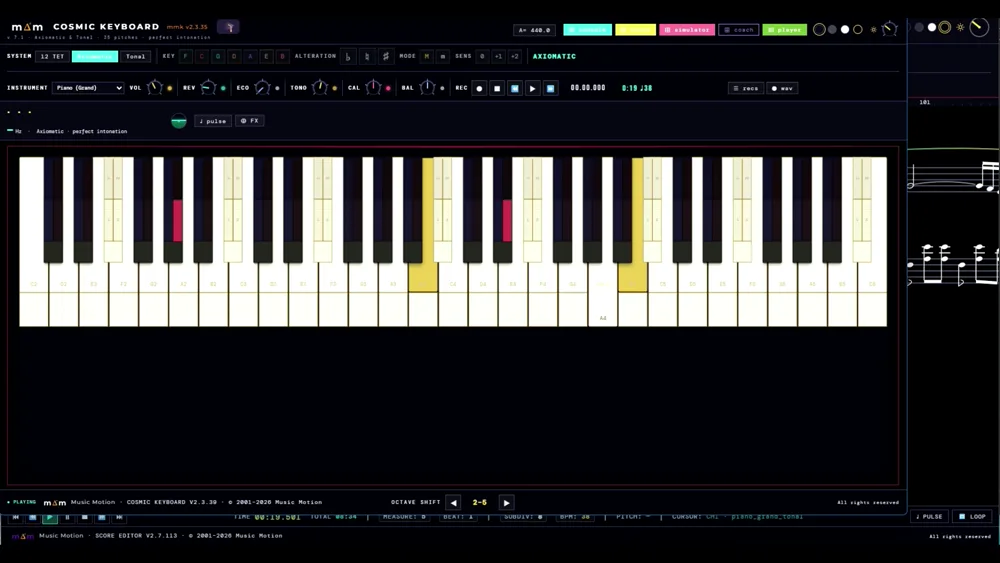

Un sostenido
no es un bemol.
Tu oído siempre lo ha sabido. La mayoría de los instrumentos digitales les dan a Re♯ y a Mi♭ una sola y misma tecla. Music Motion devuelve la diferencia — y te la deja oír.
Dos notas con dos nombres — y en el piano, un solo compromiso entre ellas. La4 = 440 Hz.
Música afinada de oído,
no por fórmulas.
Todo en Music Motion descansa sobre una sola base: la afinación pitagórica pura — razones de 2 y 3, es decir, octavas y quintas puras, sin el redondeo del temperamento igual. El oído es el juez.
Está pensado para una inmersión gradual. Afinación, escritura, interpretación, acompañamiento, orquestación: a cada una se llega paso a paso, al ritmo de quien aprende solo o de quien enseña.
El teclado de tu computadora
es el instrumento.
Abre el Cosmic Keyboard en tu navegador y toca — QWERTY, AZERTY o QWERTZ, suena por la posición de la tecla. Cada tecla está dividida: arriba la altura pitagórica pura, abajo una franja temperada, para compararlas una junto a otra. Más de sesenta instrumentos, todos pitagóricos — el piano incluido.

Seis apps que se escuchan
entre sí.
Lo que tocas en una, las demás lo reciben al instante: el teclado lo hace sonar, la partitura lo escribe y la consola lo equilibra.


Para cualquiera —
y también para el aula.
El juego de composición del Coach parte de una melodía modelo y termina con una pieza a cuatro voces escrita por ti — sin haber estudiado teoría antes.
Estudia tu parte con el acompañamiento, grábate encima con el micrófono y guarda la toma como WAV para compartirla con tu profesor.
Escribe tus propios ejercicios — práctica instrumental, armonía, contrapunto, composición — y tus alumnos los trabajan oyendo la entonación más natural. Las escuelas de música y los conservatorios tienen un programa propio.

Desde tocar tu primera pieza en el teclado de la computadora hasta el Preludio n.º 4 de Chopin y el Ave Maria de Schubert — cada uno en el navegador, cada uno con un PDF para imprimir.
El sitio, la guía de uso, los atajos, la biblioteca de instrumentos y los ejercicios.
Un afinador que muestra la nota con su verdadero nombre, en tu computadora o en tu teléfono. No se graba ni se envía nada.
Oye la diferencia
con tus propios oídos.
Ábrelo en tu navegador y toca. Sin instalación, sin más equipo que la computadora que ya tienes.
musicmotionsuite.com